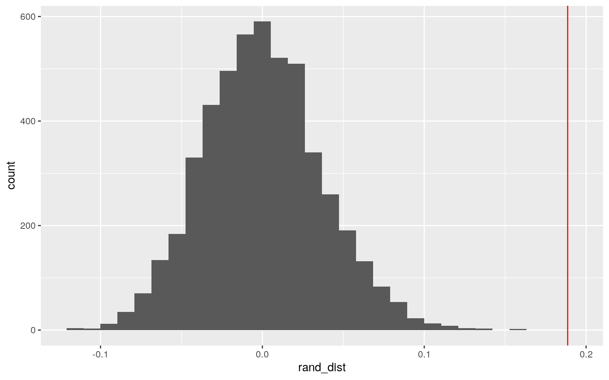
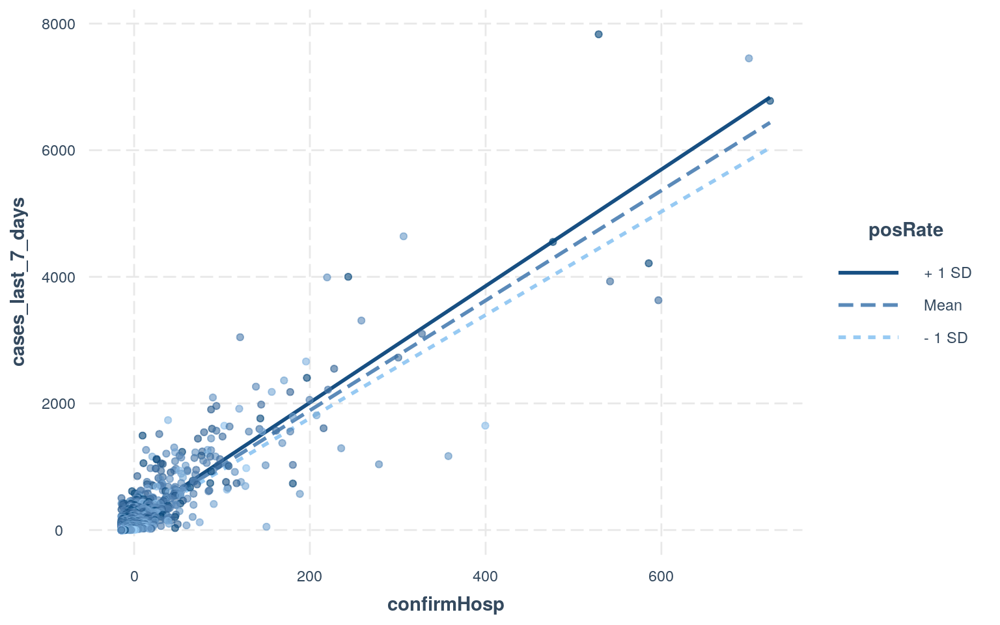
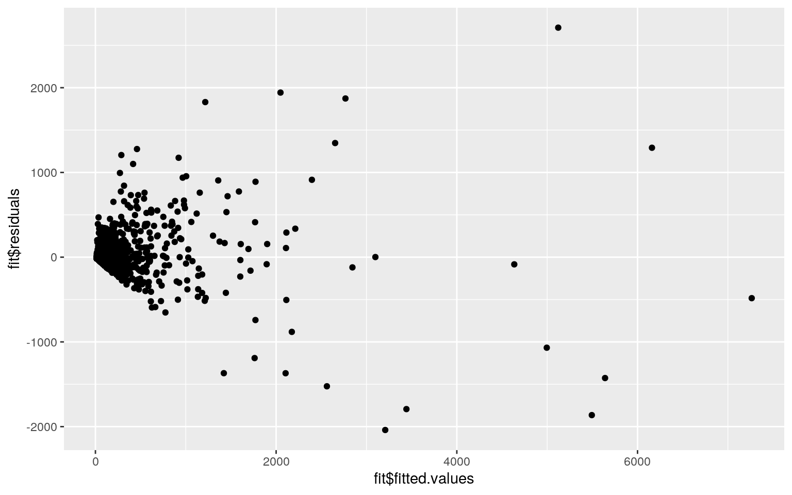
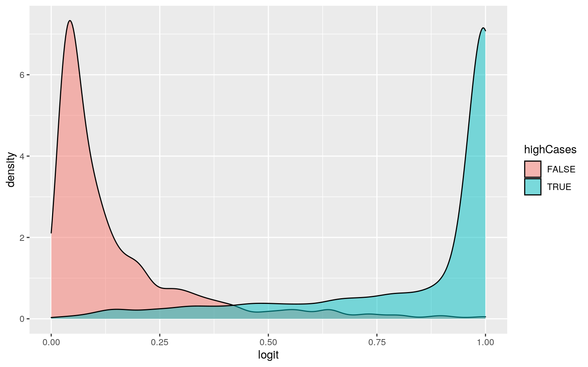
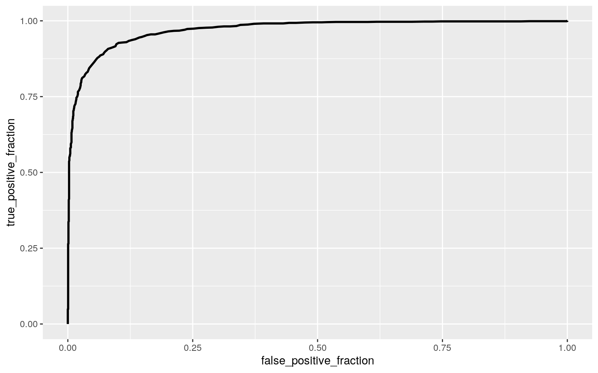

With the ongoing pandemic I absorb statistics about the state of the virus, and to verify this information I went to HealthData.gov and found their Community Profile Report (CPR) – County-Level. The following is some information on the dataset based on its documentation. It was developed by Data Strategy and Execution Workgroup in the Joint Coordination Cell, under the White House COVID-19 Team. Each observation in the dataset is county-level. It contains daily snapshot in time that focuses on recent COVID-19 outcomes in the last seven days and changes relative to the week prior.
library(tidyverse)
library(mvtnorm)
library(ggExtra)
library(rstatix)
library(sandwich)
library(lmtest)
library(interactions)
library(plotROC)FullCovid <- read_csv("COVID-19_Community_Profile_Report_-_County-Level.csv")
CovidData <- FullCovid %>%
mutate( highCases = total_cases>median(total_cases,na.rm=T) ) %>%
mutate( region=recode(state, ME="NE", MA="NE", RI="NE", CT="NE", NH="NE", VT="NE", NY="NE", PA="NE", NJ="NE", DE="NE", MD="NE", DC="NE", PR="SE", WV="SE", VA="SE", KY="SE", TN="SE", NC="SE", SC="SE", GA="SE", AL="SE", MS="SE", AR="SE", LA="SE", FL="SE", OH="MW", IN="MW", MI="MW", IL="MW", MO="MW", WI="MW", MN="MW", IA="MW", KS="MW", NE="MW", SD="MW", ND="MW", TX="SW", OK="SW", NM="SW", AZ="SW", CO="W", WY="W", MT="W", ID="W", WA="W", OR="W", UT="W", NV="W", CA="W", AK="W", HI="W") ) %>%
select(fips, county, region, highCases, everything(), -state,-fema_region)man1<-manova(cbind(total_cases,total_deaths, cases_last_7_days, deaths_last_7_days, test_positivity_rate_last_7_days, confirmed_covid_hosp_last_7_days)~region, data=CovidData)
summary(man1)## Df Pillai approx F num Df den Df Pr(>F)
## region 4 0.15215 15.882 24 9640 < 2.2e-16 ***
## Residuals 2412
## ---
## Signif. codes: 0 '***' 0.001 '**' 0.01 '*' 0.05 '.' 0.1
' ' 1Total cases, total deaths, cases the last 7 days, deaths the last 7 days, test positivity rate the last 7 days, and confirmed covid hospitalizations show a mean difference across different regions of the US.
summary.aov(man1)## Response total_cases :
## Df Sum Sq Mean Sq F value Pr(>F)
## region 4 7.0150e+10 1.7538e+10 19.705 5.634e-16 ***
## Residuals 2412 2.1467e+12 8.8999e+08
## ---
## Signif. codes: 0 '***' 0.001 '**' 0.01 '*' 0.05 '.' 0.1
' ' 1
##
## Response total_deaths :
## Df Sum Sq Mean Sq F value Pr(>F)
## region 4 52634377 13158594 39.151 < 2.2e-16 ***
## Residuals 2412 810675863 336101
## ---
## Signif. codes: 0 '***' 0.001 '**' 0.01 '*' 0.05 '.' 0.1
' ' 1
##
## Response cases_last_7_days :
## Df Sum Sq Mean Sq F value Pr(>F)
## region 4 24209477 6052369 30.236 < 2.2e-16 ***
## Residuals 2412 482815519 200172
## ---
## Signif. codes: 0 '***' 0.001 '**' 0.01 '*' 0.05 '.' 0.1
' ' 1
##
## Response deaths_last_7_days :
## Df Sum Sq Mean Sq F value Pr(>F)
## region 4 3715 928.81 26.256 < 2.2e-16 ***
## Residuals 2412 85324 35.37
## ---
## Signif. codes: 0 '***' 0.001 '**' 0.01 '*' 0.05 '.' 0.1
' ' 1
##
## Response test_positivity_rate_last_7_days :
## Df Sum Sq Mean Sq F value Pr(>F)
## region 4 0.0651 0.0162849 8.5578 7.436e-07 ***
## Residuals 2412 4.5899 0.0019029
## ---
## Signif. codes: 0 '***' 0.001 '**' 0.01 '*' 0.05 '.' 0.1
' ' 1
##
## Response confirmed_covid_hosp_last_7_days :
## Df Sum Sq Mean Sq F value Pr(>F)
## region 4 195759 48940 23.928 < 2.2e-16 ***
## Residuals 2412 4933260 2045
## ---
## Signif. codes: 0 '***' 0.001 '**' 0.01 '*' 0.05 '.' 0.1
' ' 1
##
## 855 observations deleted due to missingnessEach of the afore mentioned predictor variables illustrate a mean difference across groups
#Total Cases
pairwise.t.test(CovidData$total_cases, CovidData$region, p.adj="none")$p.value*67 >0.05## MW NE SE SW
## NE FALSE NA NA NA
## SE TRUE FALSE NA NA
## SW TRUE FALSE TRUE NA
## W FALSE TRUE FALSE TRUE#Total Deaths
pairwise.t.test(CovidData$total_deaths, CovidData$region, p.adj="none")$p.value *67 >0.05## MW NE SE SW
## NE FALSE NA NA NA
## SE TRUE FALSE NA NA
## SW TRUE FALSE TRUE NA
## W TRUE FALSE TRUE TRUE#Cases in the Last 7 Days
pairwise.t.test(CovidData$cases_last_7_days, CovidData$region, p.adj="none")$p.value *67 >0.05## MW NE SE SW
## NE FALSE NA NA NA
## SE TRUE FALSE NA NA
## SW TRUE FALSE TRUE NA
## W TRUE FALSE TRUE TRUE#Deaths int the Last 7 Days
pairwise.t.test(CovidData$deaths_last_7_days, CovidData$region, p.adj="none")$p.value *67 >0.05## MW NE SE SW
## NE FALSE NA NA NA
## SE TRUE FALSE NA NA
## SW TRUE FALSE TRUE NA
## W TRUE FALSE TRUE TRUE#Test Positivity Rate in the Last 7 Days
pairwise.t.test(CovidData$test_positivity_rate_last_7_days, CovidData$region, p.adj="none")$p.value *67 >0.05## MW NE SE SW
## NE TRUE NA NA NA
## SE FALSE FALSE NA NA
## SW FALSE TRUE FALSE NA
## W TRUE TRUE FALSE TRUE#Confirmed Covid Hospitalization in the last 7 Days
pairwise.t.test(CovidData$confirmed_covid_hosp_last_7_days, CovidData$region, p.adj="none")$p.value *67 >0.05## MW NE SE SW
## NE FALSE NA NA NA
## SE TRUE FALSE NA NA
## SW TRUE FALSE TRUE NA
## W TRUE FALSE TRUE TRUEThe above matricies illustrate which group means significantly differ by region and by predictor variable (accounting for the change in significance level mentioned below)
1-(0.95)^67## [1] 0.96782770.05/67## [1] 0.0007462687With 6 numeric predictors and 5 catagorical groups, 67 inference tests were done. This creates a 96.8% chance of having a Type-1 Error. Thus a Bonferroni correction will be done to reduce the 0.05 signifcance level to 0.00075 (7.5e-4).
group <- CovidData %>% na.omit() %>% select(region) %>% mutate(region = as.factor(region))
DVs <- CovidData %>% na.omit() %>% select(total_cases,total_deaths, cases_last_7_days, deaths_last_7_days, test_positivity_rate_last_7_days, confirmed_covid_hosp_last_7_days)
#Test multivariate normality for each group (null: normality met)
sapply(split(DVs,group), mshapiro_test)## MW NE SE SW W
## statistic 0.3448927 0.6079596 0.4318576 0.3509059
0.2546133
## p.value 2.090146e-26 1.314466e-17 1.098895e-28
1.170625e-16 3.080355e-16The MANOVA fails the first assumption of normality, the other many other assumptions to check that are harder to meet such as Homogeneity of within-group covariance, Linear relationships among DVs, and the absense of outliers.
randData <- CovidData %>% na.omit() %>% select(test_positivity_rate_last_7_days,cases_last_7_days)
sampleCor <- cor(randData$test_positivity_rate_last_7_days, randData$cases_last_7_days)
rand_dist<-vector()
for(i in 1:5000){
new<-data.frame(positives=sample(randData$test_positivity_rate_last_7_days),cases=randData$cases_last_7_days)
rand_dist[i]<- cor(new$positives, new$cases)
}
ggplot( data.frame(rand_dist), aes(x=rand_dist) ) +
geom_histogram() +
geom_vline(aes(xintercept=sampleCor), color="red")
pval <- mean(rand_dist>sampleCor | rand_dist < -sampleCor)
pval## [1] 0The Null Hypothesis is that there is no correlation between positive test rate in the past 7 days and the number of cases the past 7 days. The null distribution of the correlation coefficient is illustrated in dark grey, and the in-sample correlation coefficient is the red vertical line. The probability of a value as extreme as the in-sample value under this “randomization distribution” is 0, therefore we reject the null hypothesis that there is no correlation between these 2 variables.
lmData <- CovidData %>%
select( cases_last_7_days, test_positivity_rate_last_7_days, confirmed_covid_hosp_last_7_days ) %>%
mutate( posRate = test_positivity_rate_last_7_days-mean(test_positivity_rate_last_7_days,na.rm=T) ) %>%
mutate( confirmHosp = confirmed_covid_hosp_last_7_days-mean(CovidData$confirmed_covid_hosp_last_7_days,na.rm=T) )
fit<-lm(cases_last_7_days~posRate*confirmHosp, data=lmData)
summary(fit)##
## Call:
## lm(formula = cases_last_7_days ~ posRate * confirmHosp,
data = lmData)
##
## Residuals:
## Min 1Q Median 3Q Max
## -2039.63 -33.24 -14.33 1.47 2708.79
##
## Coefficients:
## Estimate Std. Error t value Pr(>|t|)
## (Intercept) 152.9680 3.9324 38.899 < 2e-16 ***
## posRate 431.0901 90.5095 4.763 2.02e-06 ***
## confirmHosp 8.6846 0.1005 86.457 < 2e-16 ***
## posRate:confirmHosp 11.9381 2.1726 5.495 4.32e-08 ***
## ---
## Signif. codes: 0 '***' 0.001 '**' 0.01 '*' 0.05 '.' 0.1
' ' 1
##
## Residual standard error: 192.2 on 2413 degrees of
freedom
## (855 observations deleted due to missingness)
## Multiple R-squared: 0.8242, Adjusted R-squared: 0.824
## F-statistic: 3771 on 3 and 2413 DF, p-value: < 2.2e-16Given average test positivity rate over the last 7 days and average confirmed covid hospitalizations over the last 7 days the predicted value of cases the last 7 days is 398.7656 cases
1197.4981 is the slope for test positivity rate over the last 7 days on cases the last 7 days while holding confirmed covid hospitalizations over the last 7 days constant
8.5943 is the slope for confirmed covid hospitalizations over the last 7 days on cases the last 7 days while holding test positivity rate over the last 7 days constant
The effect of positivity rate over the last 7 days is 10.5941 cases higher for every percent above the mean positivity rate over the last 7 days
This linear model explain 81.42% of varience in cases the last 7 days
interact_plot(fit, confirmHosp, posRate, plot.points = T)
#Normality
shapiro.test(fit$residuals) #H0: true distribution is normal##
## Shapiro-Wilk normality test
##
## data: fit$residuals
## W = 0.49026, p-value < 2.2e-16#Homoskedasticity
ggplot() + geom_point(aes(x=fit$fitted.values,y=fit$residuals))
bptest(fit) # H0: homoskedastic##
## studentized Breusch-Pagan test
##
## data: fit
## BP = 979.38, df = 3, p-value < 2.2e-16This linear model fails normality and homoscedasticity
coeftest(fit, vcov=vcovHC(fit))##
## t test of coefficients:
##
## Estimate Std. Error t value Pr(>|t|)
## (Intercept) 152.96796 5.23374 29.2273 < 2e-16 ***
## posRate 431.09008 170.74945 2.5247 0.01164 *
## confirmHosp 8.68462 0.69314 12.5295 < 2e-16 ***
## posRate:confirmHosp 11.93807 14.54385 0.8208 0.41182
## ---
## Signif. codes: 0 '***' 0.001 '**' 0.01 '*' 0.05 '.' 0.1
' ' 1Because the model failed homoskeydacity robust SE were used The robust SE changed the significance of the interaction, increased the positivity rate p-value, but not above 0.05, and decreased all t values.
samp_distn<-replicate(5000, {
boot_dat <- sample_frac(lmData, replace=T) #take bootstrap sample of rows
bootfit <- lm(cases_last_7_days~posRate*confirmHosp, data=boot_dat) #fit model on bootstrap sample
coef(bootfit) #save coefs
})
samp_distn %>% t %>% as.data.frame %>% summarize_all(sd)## (Intercept) posRate confirmHosp posRate:confirmHosp
## 1 5.130708 170.1034 0.6441674 14.95694The bootstrapped SEs are very similar to robust SE and much higher than the original SE, illustrating the robust SE are a more accurate measure of the sample than than the original SE
fit2 <- glm(highCases~cases_last_7_days+total_deaths, data=CovidData, family="binomial")
summary(fit2)##
## Call:
## glm(formula = highCases ~ cases_last_7_days +
total_deaths, family = "binomial",
## data = CovidData)
##
## Deviance Residuals:
## Min 1Q Median 3Q Max
## -8.4904 -0.4091 -0.0024 0.1299 6.7658
##
## Coefficients:
## Estimate Std. Error z value Pr(>|z|)
## (Intercept) -3.810729 0.137967 -27.62 <2e-16 ***
## cases_last_7_days 0.036071 0.002675 13.48 <2e-16 ***
## total_deaths 0.055663 0.002484 22.41 <2e-16 ***
## ---
## Signif. codes: 0 '***' 0.001 '**' 0.01 '*' 0.05 '.' 0.1
' ' 1
##
## (Dispersion parameter for binomial family taken to be 1)
##
## Null deviance: 4534.6 on 3270 degrees of freedom
## Residual deviance: 1585.5 on 3268 degrees of freedom
## (1 observation deleted due to missingness)
## AIC: 1591.5
##
## Number of Fisher Scoring iterations: 11exp(fit2$coefficients)## (Intercept) cases_last_7_days total_deaths
## 0.02213204 1.03672930 1.05724118Given the above model’s coefficients: for every 1 unit increase in cases in the last 7 days the odds of highCases incrase by 1.01, and for every 1 unit increase in total deaths the odss of highCases increase by 1.02
CovidData <- CovidData %>% filter( complete.cases(CovidData$highCases),complete.cases(CovidData$cases_last_7_days),complete.cases(CovidData$total_deaths) )
table(Predicted = (predict(fit2,type="response")>0.5) , Actual = as.numeric(CovidData$highCases)) %>% addmargins## Actual
## Predicted 0 1 Sum
## FALSE 1538 200 1738
## TRUE 98 1435 1533
## Sum 1636 1635 3271class_diag<-function(probs,truth){
tab<-table(factor(probs>.5,levels=c("FALSE","TRUE")),truth)
acc=sum(diag(tab))/sum(tab)
sens=tab[2,2]/colSums(tab)[2]
spec=tab[1,1]/colSums(tab)[1]
ppv=tab[2,2]/rowSums(tab)[2]
if(is.numeric(truth)==FALSE & is.logical(truth)==FALSE) truth<-as.numeric(truth)-1
#CALCULATE EXACT AUC
ord<-order(probs, decreasing=TRUE)
probs <- probs[ord]; truth <- truth[ord]
TPR=cumsum(truth)/max(1,sum(truth))
FPR=cumsum(!truth)/max(1,sum(!truth))
dup<-c(probs[-1]>=probs[-length(probs)], FALSE)
TPR<-c(0,TPR[!dup],1); FPR<-c(0,FPR[!dup],1)
n <- length(TPR)
auc<- sum( ((TPR[-1]+TPR[-n])/2) * (FPR[-1]-FPR[-n]) )
data.frame(acc,sens,spec,ppv,auc)
}
probs <- predict(fit2)
class_diag(probs, CovidData$highCases)## acc sens spec ppv auc
## TRUE 0.8994191 0.8348624 0.9639364 0.9585674 0.9720858See the above table and confusion matrix for diagnostic values of the logistic model with 2 predictors
densityVal <- CovidData %>% mutate(logit=fit2$fitted.values )
ggplot(densityVal, aes(x=logit, fill=highCases)) + geom_density(alpha=.5) The above density plot illustrates the predictor value (logit) compared to the actual group membership to highCases
ROCplot<-ggplot(CovidData)+geom_roc(aes(d=highCases,m=cases_last_7_days+total_deaths), n.cuts=0)
ROCplot
calc_auc(ROCplot)## PANEL group AUC
## 1 1 -1 0.9704336The above ROC curve is of the logistic model with 2 predictors. Based on the shape of the ROC curve and the AUC of the aforementioned curve, the classification of this 2 predictor logistical model is very good.
lassoData <- CovidData %>% select(-fips, -county,-date) %>% na.omit
fit3 <- lm(highCases~(.), data=lassoData)
probs <- predict(fit3,data=CovidData)
class_diag(probs, lassoData$highCases)## acc sens spec ppv auc
## TRUE 0.9338624 1 0.01960784 0.9337748 0.9359477From including all variables the model was made more flexible, but had lower values for Accuracy, Sensitivity, and AUC, as there was more noise introduced.
k=10
cvData<-lassoData[sample(nrow(lassoData)),] #randomly order rows
folds<-cut(seq(1:nrow(lassoData)),breaks=k,labels=F) #create folds
diags<-NULL
for(i in 1:k){
## Create training and test sets
train<-cvData[folds!=i,]
test<-cvData[folds==i,]
truth<-test$highCases ## Truth labels for fold i
## Train model on training set (all but fold i)
lassofit<-glm(highCases~(.),data=train,family="binomial")
## Test model on test set (fold i)
probs<-predict(lassofit,newdata = test,type="response")
## Get diagnostics for fold i
diags<-rbind(diags,class_diag(probs,truth))
}
summarize_all(diags,mean) #average diagnostics across all k folds## acc sens spec ppv auc
## 1 0.9629474 0.9814584 0.7230952 0.9786964 0.9034337There is no sign of overfitting the more flexible model, with all predictors, as the AUC in 10 Fold Cross Validation was surprisingly higher for out-of-sample AUC than for the in-sample AUC.
library(glmnet)
y<-as.matrix(lassoData$highCases) #grab response
x<-model.matrix(highCases~(.),data=lassoData)[,-1] #grab predictors
cv<-cv.glmnet(x,y,family="binomial")
lasso<-glmnet(x,y,family="binomial",lambda=cv$lambda.1se)
coef(lasso)## 37 x 1 sparse Matrix of class "dgCMatrix"
## s0
## (Intercept) -1.070618e+01
## regionNE 7.734075e-01
## regionSE .
## regionSW 3.528254e+00
## regionW 1.892001e+00
## cases_last_7_days .
## cases_per_100k_last_7_days 7.244638e-04
## total_cases 1.408761e-03
## cases_pct_change_from_prev_week -3.059423e-01
## deaths_last_7_days .
## deaths_per_100k_last_7_days -1.483196e-02
## total_deaths 3.503220e-02
## deaths_pct_change_from_prev_week -4.070334e-01
## test_positivity_rate_last_7_days 1.241021e+00
## total_positive_tests_last_7_days .
## total_tests_last_7_days 4.095476e-04
## total_tests_per_100k_last_7_days -8.988997e-05
## test_positivity_rate_pct_change_from_prev_week
1.562493e+00
## total_tests_pct_change_from_prev_week -3.511964e-01
## confirmed_covid_hosp_last_7_days -1.363544e-02
## confirmed_covid_hosp_per_100_beds_last_7_days
5.953476e-03
##
confirmed_covid_hosp_per_100_beds_pct_change_from_prev_week
3.750425e-01
## suspected_covid_hosp_last_7_days -1.544227e-02
## suspected_covid_hosp_per_100_beds_last_7_days
4.311288e-03
##
suspected_covid_hosp_per_100_beds_pct_change_from_prev_week
-8.461705e-02
## pct_inpatient_beds_used_avg_last_7_days 6.410423e-01
## pct_inpatient_beds_used_abs_change_from_prev_week
-1.937284e+00
## pct_inpatient_beds_used_covid_avg_last_7_days .
## pct_inpatient_beds_used_covid_abs_change_from_prev_week
.
## pct_icu_beds_used_avg_last_7_days 2.790121e+00
## pct_icu_beds_used_abs_change_from_prev_week 1.715033e+00
## pct_icu_beds_used_covid_avg_last_7_days -5.990397e+00
## pct_icu_beds_used_covid_abs_change_from_prev_week
-1.932628e-01
## pct_vents_used_avg_last_7_days 3.371578e+00
## pct_vents_used_abs_change_from_prev_week -2.618595e+00
## pct_vents_used_covid_avg_last_7_days 1.012240e+01
## pct_vents_used_covid_abs_change_from_prev_week
-1.580255e+00newLassoData <- lassoData %>% mutate(regionNE=(region=="NE")) %>% mutate(regionSW=(region=="SW")) %>% mutate(regionSE=(region=="SE"))
lassoSelectedVarFunction <- highCases~regionNE+
regionSE+
regionSW+
cases_per_100k_last_7_days+
total_cases+
cases_pct_change_from_prev_week+
deaths_per_100k_last_7_days+
deaths_pct_change_from_prev_week+
test_positivity_rate_last_7_days+
test_positivity_rate_pct_change_from_prev_week+
total_tests_pct_change_from_prev_week+
confirmed_covid_hosp_per_100_beds_last_7_days+
confirmed_covid_hosp_per_100_beds_pct_change_from_prev_week+
suspected_covid_hosp_last_7_days+
suspected_covid_hosp_per_100_beds_pct_change_from_prev_week+
pct_inpatient_beds_used_avg_last_7_days+
pct_inpatient_beds_used_covid_avg_last_7_days+
pct_inpatient_beds_used_covid_abs_change_from_prev_week+
pct_icu_beds_used_avg_last_7_days+
pct_icu_beds_used_abs_change_from_prev_week+
pct_icu_beds_used_covid_avg_last_7_days+
pct_icu_beds_used_covid_abs_change_from_prev_week+
pct_vents_used_avg_last_7_days+
pct_vents_used_covid_abs_change_from_prev_weekThe variables that were selected by LASSO were those that increased the ability of the model to predict highCases and did not add extra noise in the data for the model to learn.
######## IN-SAMPLE ########
fitLasso <- glm(lassoSelectedVarFunction, data=newLassoData)
probs <- predict(fitLasso)
class_diag(probs, newLassoData$highCases)## acc sens spec ppv auc
## TRUE 0.9338624 1 0.01960784 0.9337748 0.922848######## OUT-OF-SAMPLE ########
k=10
cvData<-newLassoData[sample(nrow(newLassoData)),] #randomly order rows
folds<-cut(seq(1:nrow(newLassoData)),breaks=k,labels=F) #create folds
diags<-NULL
for(i in 1:k){
## Create training and test sets
train<-cvData[folds!=i,]
test<-cvData[folds==i,]
truth<-test$highCases ## Truth labels for fold i
lassofit<-glm(lassoSelectedVarFunction,data=train,family="binomial") ## Train model on training set (all but fold i)
probs<-predict(lassofit,newdata = test,type="response") ## Test model on test set (fold i)
diags<-rbind(diags,class_diag(probs,truth)) ## Get diagnostics for fold i
}
summarize_all(diags,mean) #average diagnostics across all k folds## acc sens spec ppv auc
## 1 0.9814211 0.9885461 0.9046429 0.9914872 0.9960423Using the variables that LASSO selected, the model’s out-of-sample AUC is higher than the model’s in-sample AUC